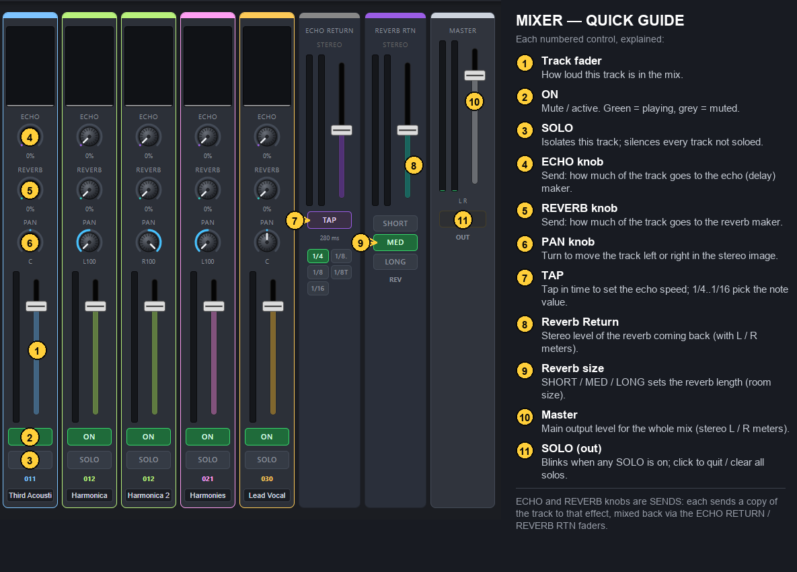

Load Other Folder
▶ Play
⏮ Rewind
« 10s
88:88 / 88:88
00:00 / 00:00
10s »
📁 SELECT FOLDER OF TRACKS
Checking for a remembered folder…
0 / 0
How the mixer works

Created by Anthony Kuzub — for educational and experimental purposes